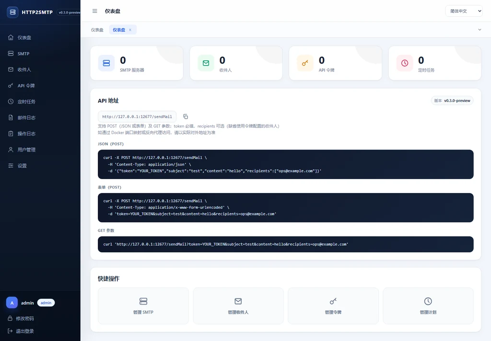
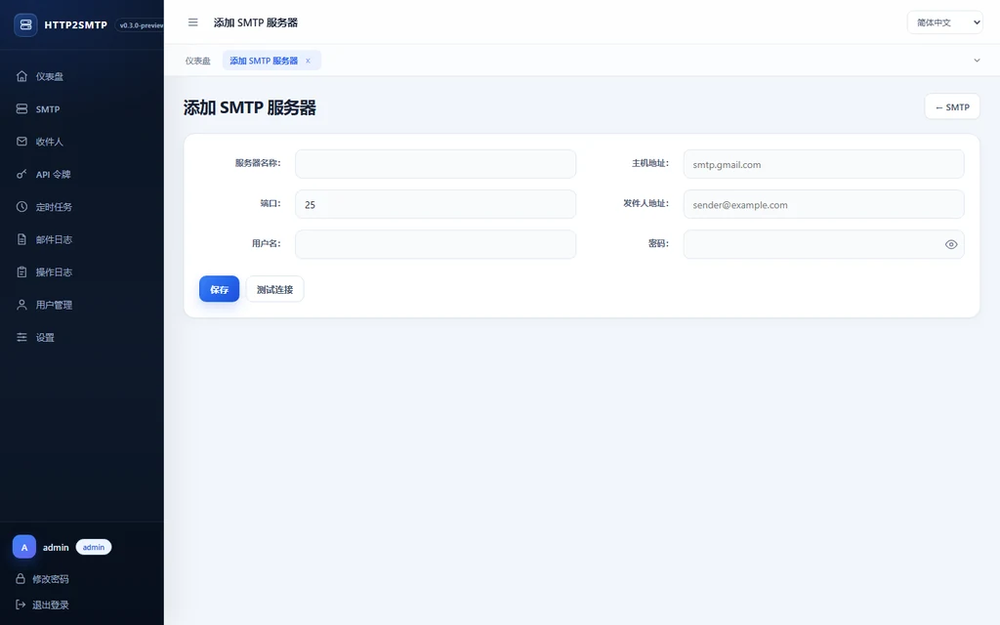
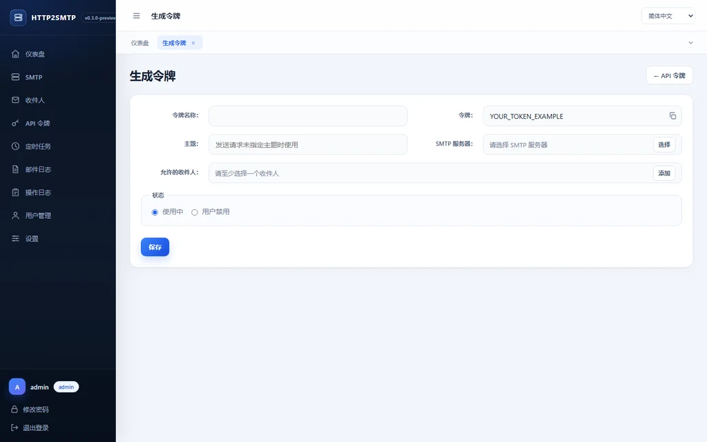
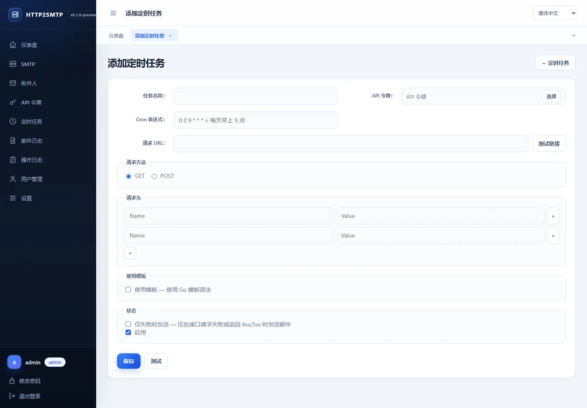

JSON / 表单 / GET
三种请求方式共享同一套令牌与收件人配置，方便脚本、Webhook 和服务端直接调用。
在浏览器中管理 SMTP、收件人、API 令牌和定时任务。 业务程序不再保存邮件密码，只需发送一个 HTTP 请求。

适合告警、报表、自动化和内部系统通知，无需在每个项目里重复维护 SMTP 配置。
三种请求方式共享同一套令牌与收件人配置，方便脚本、Webhook 和服务端直接调用。
普通用户只能管理自己的 SMTP、收件人和令牌，管理员统一审计与维护全站数据。
使用 Cron 表达式请求 API 或链接，支持响应模板、失败发送策略和立即测试。
邮件发送记录、附件下载和操作审计日志完整保留，方便问题定位与安全管理。
管理界面与公开发信 API 分开监听，可以只把 12567 端口暴露给业务系统。
Go 模板、CSS、JS 和多语言资源全部嵌入二进制，无需额外 Web 目录或前端构建。
从 SMTP 配置到令牌和定时任务，常用操作集中在一个工作区。



映射管理端口和数据目录，打开浏览器完成初始化即可开始发送。
管理端口 12566，公开 API 端口 12567。
选择数据库并创建管理员账号。
从任意应用调用 /sendMail。
docker run -d --name http2smtp \
-p 12566:12566 -p 12567:12567 \
-v "$PWD/data:/data" \
cooge123/http2smtp令牌配置的收件人会与请求中的地址自动合并，重复地址只发送一次。
curl -X POST http://127.0.0.1:12567/sendMail \
-H "Content-Type: application/json" \
-d '{
"token": "YOUR_TOKEN",
"subject": "Hello",
"content": "HTTP2SMTP works",
"recipients": ["ops@example.com"]
}'管理界面保持私有，邮件发送 API 独立开放。SQLite、日志和附件统一保存在 /data。